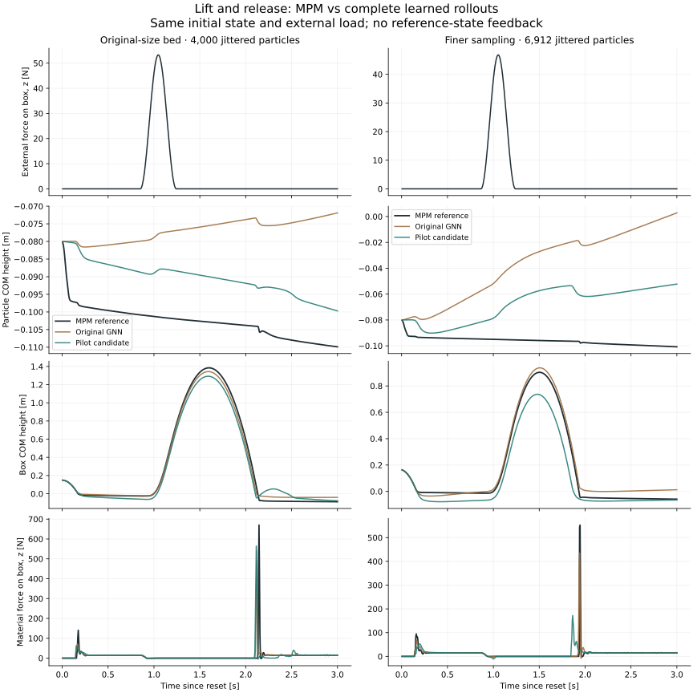

Slides · GPU implementation · Original dataset audit
October 15, 2026. Particle motion is learned; rigid-body motion and contact reactions use the existing analytical pipeline. MPM is used to collect reference data, never inside learned inference.
torch.compile. Neighbor construction, the GNN, integration, and contact reconstruction have not been captured together as one CUDA graph.Each particle is a node. Two particles are connected when their separation is below 0.035 m. One shared neural network computes messages on these connections. A second shared network updates each particle from its current features and combined incoming messages. Our model repeats this three times, then predicts a motion correction for every particle.
Illustration only: a two-dimensional section, fixed 0.14 m width and 0.025 m neighbor radius for readability. Brown = selected particle; teal = particles within the chosen number of graph connections; gray = other particles. This does not simulate material motion. Every particle receives its own update, not only the highlighted particle.
next_particle_velocity = current_particle_velocity
+ dt × gravity
+ 0.1 m/s × GNN_output
next_particle_position = current_particle_position
+ dt × next_particle_velocity
Static tray contact projection follows this update. The current default does not project particles against the moving object. Predicted contact forces are not applied to the particles a second time: learned particle motion already represents material interactions.
| Change | What changes for the GNN | What must be tested |
|---|---|---|
| Larger bed, same particle spacing | More nodes and edges; shared weights stay the same. | Interior behavior, distance from walls, accumulated drift, and larger-scale motion. |
| Finer particle sampling, same bed | More neighbors inside the fixed radius; less mass per particle. | Resolution sensitivity of learned messages and contact reconstruction. |
| Position jitter at reset | Irregular edge directions, distances, and neighbor counts. | Stable predictions on irregular samples and complete rollouts. |
Particle sampling density means samples per unit volume. Material density means kg/m³; these are different parameters. The GNN accepts variable counts, but is not mathematically invariant to particle resolution. Its aggregation is a sum divided by the square root of neighbor count. The current compiled inference path covers at most 10,000 particles; larger scenes use the existing chunked path. A new particle count can also trigger compilation, and a future captured graph will need compatible buffer shapes.
At every reset, each particle receives an independent uniform offset along each axis. Training offsets are at most 20% of that axis's original spacing, while particle masses and initial velocities are unchanged. Jitter occurs once at reset; it is not random motion injected at every simulation step. MPM then produces consistent target trajectories from this state.
The old selected checkpoint saw a regular 20 × 20 × 10 lattice. Small input noise during training was not a substitute for collecting irregular initial arrangements. Rendering-only jitter is a separate option: it changes appearance but cannot establish physical generalization.
The old 48 training episodes used random initial pose and velocity, followed by passive motion. They did not contain mid-run pushes or deliberate withdrawal. The learned particle update has no explicit nonadhesion constraint. The analytical body's contact constraints alone cannot enforce such a constraint on a separately predicted particle trajectory.
A fixed-state sensitivity check changed only the body's vertical-velocity input. For 776 nearby particles, mean predicted vertical velocity changed from −0.00208 m/s with a stationary body to +0.00145 m/s with a body velocity of +0.3 m/s. This supports investigating a learned upward response; it is not a physical MPM comparison and does not identify the sole cause. The new small-bed rollout already has 1.86 cm of particle COM-height error at 0.5 s, before the upward pulse starts. Error continues while the box is well above the material. Incorrect settling and subsequent particle drift therefore also contribute; the problem is not explained solely by following a lifted body. Material may legitimately be entrained during some interactions, so the measured MPM response is the reference.
| Split | Episodes | Conditions |
|---|---|---|
| Training | 24 new | Beds 0.32 × 0.32 × 0.16, 0.48 × 0.32 × 0.12, and 0.32 × 0.32 × 0.24 m; sampling 1.0 or 1.25 particles per MPM cell axis; jitter 20%. |
| Validation | 6 new | Independent seeds and held-out combinations of the training bed sizes, shapes, and motion schedules. |
| Test | 6 new | Separate cases: wider 0.64 × 0.48 × 0.16 m bed; finer sampling at 1.5 particles per cell axis; larger 30% jitter. |
Each episode lasts 3 s at a 5 ms timestep. The object is freely dynamic: smooth force and torque pulses start during the trajectory, then return to zero. Random-push episodes include horizontal loads, rotation, and an upward pulse. Lift episodes contain a vertical force pulse followed by release. No object position or velocity is prescribed after reset. Box, sphere, and cylinder cases are included. This is a limited design, not the full Cartesian product of all conditions.
MPM grid spacing is 0.02 m, with at most 25 solver iterations. This pilot fixes material density at 1,200 kg/m³, friction at 0.4, Young's modulus at 1 MPa, and object mass at 1.5 kg. Fine-tuning mixes these trajectories with the original 48 training episodes covering four material/mass combinations. The full 2 × 2 m G1 testbed remains outside this pilot.
The candidate was selected at update 500 using the lowest one-step validation velocity error among the four saved pilot checkpoints. It was then frozen before test evaluation. Its one-step error on the new validation set is actually slightly worse than the original model: 0.01279 vs 0.01203 m/s. On the original validation set it is 0.01920 vs 0.01557 m/s. Selection among new candidates is not evidence of beating the existing model.
| Two episodes per condition | Final particle error [mm] | Largest body-center error [m] | Material-force RMSE [N] |
|---|---|---|---|
| Validation: small bed, box lift | 43.6 → 31.6 | 0.084 → 0.159 | 40.4 → 48.0 |
| Validation: rectangular bed, sphere push | 88.8 → 43.4 | 3.796 → 0.560 | 13.2 → 12.9 |
| Validation: deep bed, cylinder push | 52.2 → 37.9 | 4.062 → 9.655 | 6.9 → 13.8 |
| Test: wider bed, box lift | 90.4 → 37.2 | 0.567 → 0.383 | 65.4 → 46.1 |
| Test: finer sampling, box lift | 128.8 → 85.4 | 0.110 → 0.374 | 39.5 → 39.8 |
| Test: stronger jitter, cylinder push | 87.7 → 40.9 | 0.203 → 0.136 | 27.0 → 14.9 |
Every cell is original → candidate. Particle error is the mean of the two final position-vector RMSEs against MPM. Body error is the largest center-distance error across both 3 s trajectories. Force RMSE combines both episodes and all three force components as a vector error. Force means material-on-moving-body force, excluding gravity and applied external loads. Finite completed rollouts can still be physically inaccurate; large body errors are failures, not successful tests.

In the two small-bed box lift cases, maximum particle COM height above the reference falls from about 3.8 cm to 1.4 cm. However, the largest box-center error increases from 8.4 cm to 15.9 cm. The finer-sampling tests still show roughly 5 cm of positive COM-height bias with the candidate. This pilot has not solved lifting robustness or resolution generalization.
The deep-bed cylinder tests show severe body-motion errors despite reduced particle error. A particle-position loss alone does not validate the coupled force reconstruction. These results motivate separate conditional-particle and coupled-rollout diagnostics, broader interaction coverage, and validation that includes body motion and reaction forces; they do not establish that collecting more examples alone will fix the problem.
All 12 reference files pass schema/finite-value checks. An audit of all 36 recorded initial states confirms nonzero, bounded jitter and different particle arrangements between episodes. The largest per-file mean body force-balance residual is 2.8e-05 N. The six focused tests for load recording, schedule behavior, and existing GNN contracts pass. Scoped formatting checks pass; the repository-wide changelog hook still flags unrelated pre-existing invalid fragments.
Full conditions, checkpoint hashes, data validation, training arguments, and per-episode results. Plot data: original / small bed, candidate / small bed, original / finer sampling, candidate / finer sampling.
These are separate issues. The current GNN is not a validated granular-material simulator. The wall-crossing implementation has been corrected, but the learned motion still produces excessive local particle concentration. More training data alone is not an established solution.
| Current input | Exact information |
|---|---|
| Particle features (16) | Three velocity vectors; reference material density, friction, Young's modulus, Poisson ratio, particle mass, particle radius; neighbor count. |
| Particle-edge features (7) | Relative position vector, distance, and current relative velocity vector. |
| Rigid-body features (9 per particle/body pair) | Signed surface distance, surface normal, relative surface velocity, inverse body mass, and body friction. Geometry and point velocity incorporate body pose and angular velocity. |
Particle positions build graph connectivity and geometry features; absolute positions are not separate node features. The three velocity samples span 10 ms. Three message-passing rounds occur within each step, but the hidden node features are not retained between timesteps. The network predicts a three-component velocity correction followed by position integration. The local velocity-gradient fit used later by the force estimator is not fed into the GNN and is not the stored APIC transfer state. Four-step rollout training exposes it to 20 ms of its own predictions per training sample, while evaluation lasts 3 s.
Newton's reference state includes elastic deformation, plastic volume ratio, APIC velocity gradient, and stress. Its solve reads elastic deformation and APIC history; plastic volume affects hardening. Our model receives none of these evolving fields, and our current recorder does not save them. See the Newton state definitions. Hardening is zero in this dataset, so missing plastic volume history is not established as the cause of this failure.
State sufficiency: for general elastoplastic motion, a short position/velocity description need not uniquely determine the next state when internal deformation differs. A deterministic predictor cannot distinguish identical inputs with different targets. This is a limitation of the chosen inputs, not a proof that learned simulation is impossible. We have not measured its contribution to this dataset's error. Longer history or recurrent material state may help; either needs a controlled comparison.
Measured concentration: in one 3 s box lift-and-release rollout after the wall fix, 20.6% of predicted particles have a nearest neighbor within 8 mm, versus 10.8% in MPM. The fifth percentile of nearest-neighbor distance is 3.55 mm versus 6.32 mm. The median distances are similar (10.93 vs 11.11 mm), so this indicates excessive local concentration, not a uniform collapse of the whole bed. This comparison does not identify its cause. Recorded diagnostic values.
Wall defect: the previous correction examined only the predicted endpoint and projected to the nearest collider face. A particle stepping into the outer half of a wall could be projected outside; a particle crossing the entire wall could be missed. The GPU correction now checks the swept particle-center path against finite tray boxes and preserves tangential motion. A regression failed before the fix and passes afterward; all nine GPU tests pass. Particles can still move over the finite wall, and this is not a hard-sphere collision model.
Appearance: the large-bed video in the box force-estimation report uses roughly 16 mm spacing and 7.97 mm display radius in a 2 × 2 × 0.3 m bed. The pilot uses 16 mm spacing and an 8 mm sample radius in a 0.32 × 0.32 × 0.16 m bed. The physical sampling was not made coarser; the smaller bed and closer camera changed the apparent size. The pilot now displays 4 mm-radius spheres, separately from its 8 mm model-input radius. This improves readability without changing simulated particle resolution.
cd ~/isaac/particle_nerd ./play_pilot.sh # Optional smaller display spheres, with identical physical sampling: ./play_pilot.sh --particle-render-radius 0.002
Next discriminating experiment: record the reference elastic deformation and APIC history, then compare the current inputs with those extra reference fields on identical train/validation splits. Such reference fields would be diagnostic inputs only; deployment would need to update its own material state. This does not require running MPM at inference. Separate one-step prediction, complete particle rollouts, and coupled body-force errors to identify which limitation dominates.
The earlier paired rollout table above was measured before the swept-wall fix and retains its recorded source hashes. No previous accuracy or timing result is retroactively attributed to the new correction. The post-fix nearest-neighbor diagnostic and 30-step RTX viewer check are separate measurements.
Body force balance includes recorded external loads: mass × acceleration = gravity + applied material force + rigid-contact force + external force. The first force-driven smoke test gave a mean residual of 5.6e-6 N. The complete learned evaluator replays the same external loads after the initial reset; reference body and particle states are used only to calculate errors.
Evaluation records particle position error, mass-weighted particle center-of-mass height, 95th-percentile particle height, moving-body center error, and material-on-body force error. Heights use the same world z origin at the initial material surface. A run that stops early is reported with its actual duration.
Reference collection uses Newton's host-controlled MPM convergence loop because the installed Warp conditional-graph kernel currently fails its CUDA toolchain compatibility check. MPM numerical kernels remain on the GPU. This workaround is confined to reference collection; the learned physics step retains the existing GPU implementation. No timing comparison is drawn from concurrent experiment jobs.
python examples/particle_nerd/collect_diverse_data.py --output-dir NEW_DATA_DIRECTORY --mpm-host-loop python examples/particle_nerd/evaluate_interactions.py DATA_DIRECTORY CHECKPOINT --output NEW_REPORT_DIRECTORY --split test
The graph-network formulation and training-noise motivation follow Sanchez-Gonzalez et al., Learning to Simulate Complex Physics with Graph Networks (2020). The exact architecture, inputs, and tests above describe this implementation, not a claim to reproduce the paper's results.